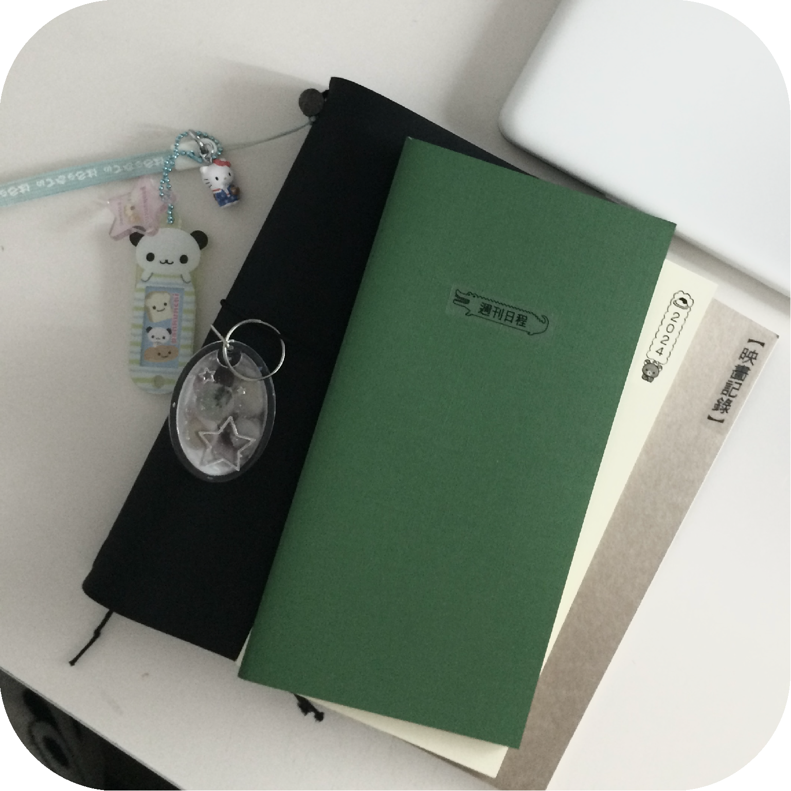
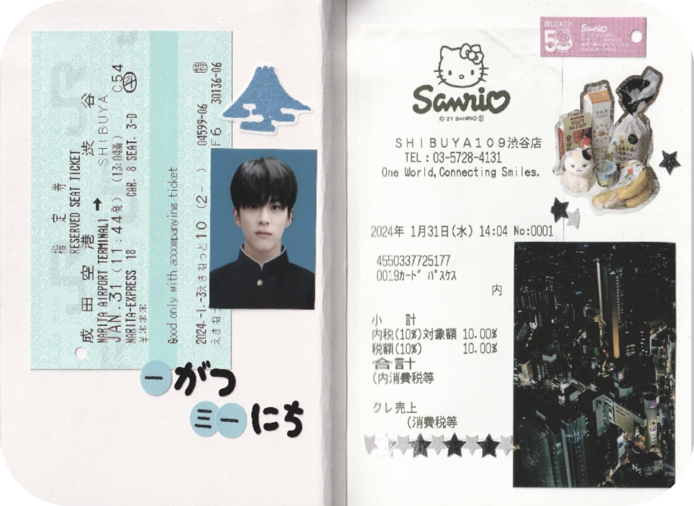
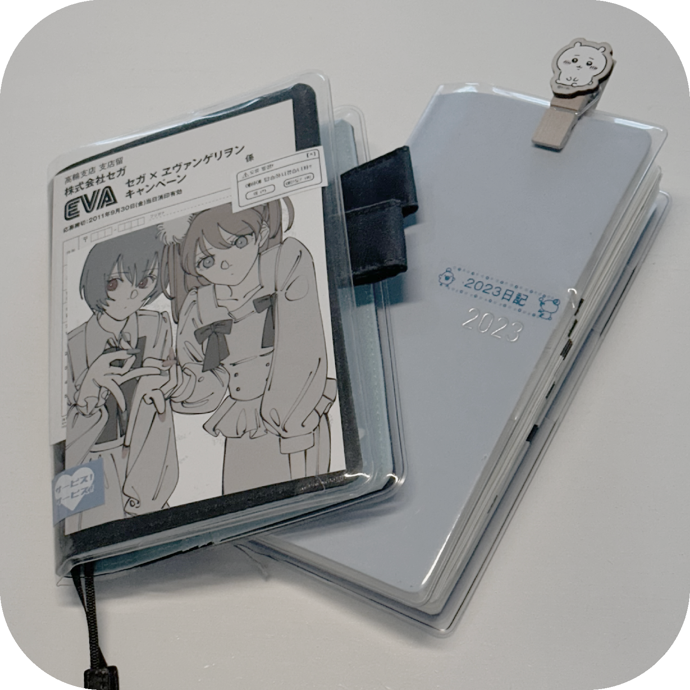

|  |
Traveler's Note Original size
스케줄러로 사용하는 노트이다. 현재는 위클리, 먼슬리, 작품 감상 노트, 자유 노트 총 4개의 노트와 사진 보관용 파일 2개를 끼워 사용하고 있다.
이 노트는 작년에 마련하여 올해부터 사용하기 시작하였다. 가죽 커버의 질이 좋고 노트도 튼튼해서 앞으로 5년 이상 사용할 수 있을 것 같다.
It is a notebook that is used as a scheduler. Currently, I am using four notebooks, including Weekly, Monthly, work appreciation notes, and free notes, and two photo storage files.
I prepared this note last year and started using it this year. The quality of the leather cover is good and the notebook is strong, so it seems that it can be used for more than five years.
|
|
 |
|  |
ほぼ日手帳 Hobonichi Techo Daily & Weekly
가장 오래 사용하고 있는 브랜드의 다이어리이다. 벌써 5년 정도 사용한 노트인데, 올해는 위클리만 사용하고 있다. 종이질도 좋고 다이어리 레이아웃이 사용하기 너무 편해서 정착하게 되었다.
꾸준히 느끼고 있는 하나의 단점이 있다면 에폭시 류의 두꺼운 스티커를 붙일 수 없다는 것이다.
It's a diary of the brand that I've been using for the longest time. I've already used this notebook for about five years, but I'm only using Weekly this year. It's settled to this brand because the paper quality is good and the diary layout is easy to use.
One disadvantage I'm constantly feeling is that you can't put thick stickers. |
|
@Mutot Platform Note
여행 노트로 사용하고 있는 노트이다. 여행 스크랩용 노트로 제작된 노트여서 깔끔하고 페이지를 쉽게 자를 수 있도록 절취선도 있어 사용하기 편한 노트이다. 종이가 상당히 두꺼운 편이라서 다양한 영수증이나 사진들을 붙이기도 좋다.
올해 초 1월에 간 일본 여행을 기록하기 위해 샀던 노트이다. 앞으로도 이 노트에 가게 될 많은 여행들의 추억들을 가득 담아, 다 작성하고 추억 회고를 하고 싶다.
It is a notebook I am using as a travel note. This was made of travel scraps, so it is easy to use because there is a perforation line for neat and easy page cutting. The paper is also quite thick, so it is good to attach various receipts or photos.
I first bought this notebook to record my trip to Japan in early January of this year. I want to write all the memories of the many trips I will go to in this notebook in the future. |